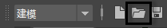

要打开最近保存的 Maya 场景文件，请执行下列操作之一：
- 单击 Maya 界面左上角的应用程序主页 图标
 。单击文件右侧的选项菜单还允许您：
。单击文件右侧的选项菜单还允许您：
- 在浏览器中打开文件位置。
- 将文件路径位置复制到剪贴板。
- 从最近使用的列表中删除文件。
注： 如果应用程序主图标未显示，可能是在“界面首选项”(Interface Preferences)的“主屏幕”(Home Screen)部分中设置为了隐藏状态，或者您使用的是 2022 之前的 Maya 版本。 - 选择“文件 > 最近的文件”(File > Recent Files)，然后从显示的列表中选择所需的文件。
- 在状态行（工具栏）的“打开场景”(Open a Scene)图标上单击鼠标右键，然后选择文件。

“最近的文件”(Recent Files)列表还显示上次保存的文件以及崩溃前使用的最后一个文件。有关查找已恢复文件的详细信息，请参见崩溃后恢复数据。
注： 您可以使用“文件/项目”(Files/Projects)首选项（“窗口 > 设置/首选项 > 首选项”(Window > Settings/Preferences > Preferences)）自定义在此列表中显示的文件数量。